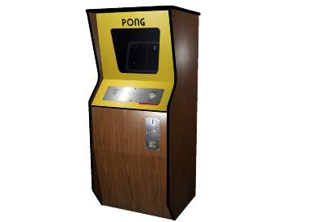

The History of Pong
Pong was created by Al Alcorn and Nolan Bushnell in 1972
Al Alcorn above. Taken from https://www.youtube.com/watch?v=4fBXVtIztBc
A young Nolan Bushnell. Taken from https://www.intheblack.com/articles/2015/10/01/video-game-pioneer-nolan-bushnell-focuses-on-education
Pong was intially released in June 1972 and a home version of the game was released in 1975.
Image of a pong machine, taken from https://dayintechhistory.com/dith/november-29-1972-pong-machine/
Pong is essentially table tennis where a square ball bounces off of players paddles and the tops and bottom of the screen with the goal of getting the ball past the other person's paddle.

Image taken from https://www.bbc.com/news/technology-33005297
Click here to play Pong